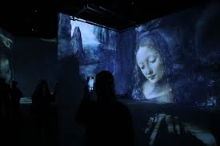

DİJİTAL SANAT MÜZESİ

.jpeg)
Alanında Türkiye’de bir ilk olan ‘X Media Art Museum’ (XMAM) kapılarını açtı. Kültür-sanat alanında öncü projeleri ile bilinen DasDas iş birliğinde ve Paribu’nun da desteğiyle hayata geçen X Media Art Museum’u, müzenin kurucuları Mert Fırat, Muzaffer Yıldırım, Ferdi Alıcı, Esra Özkan ile Paribu CEO’su Yasin Oral anlattı. Eserler tek bir kişiye değil, birçok kişiye aittir. XMAM'da izleyiciler hem fiziksel hem de duygusal olarak deneyim yaşıyor, bu şekilde müzenin bir parçası oluyorlar. XMAM'ın ilk sergisi, 500 yılı aşkın kültür ve sanat mirasını izleyiciyle buluşturuyor. Müzenin kurucularından olan Mert Fırat, “Bu sanatı daha da araştırmaya ve geliştirmeye devam edeceğiz” dedi. Müzenin bir diğer kurucusu Muzaffer Yıldırım, Türkiye'de ilk kez kalıcı bir dijital sanat müzesinin açıldığını belirterek, “XMAM alanında bir ilk. Buradaki sanat eserleri, müze ziyaretçilerini farklı bir deneyime yönlendiriyor. Müzedeki sergiler üç ayda bir değişecek. İlk sergimiz olan Leonardo Da Vinci deneyimi, Leonardo Da Vinci'yi sadece bir ressam olarak değil, aynı zamanda eserlerinin bilimsel olarak incelenmesiyle de anlatıyor. Parçanın Ludovico Einaudi ve Oscar ödüllü Nomadland filminin bestecisi Mercan Dede'nin müzikleriyle birleşimi de bu sergiyi unutulmaz bir deneyim haline getiriyor.”Dünyaca ünlü Ouchhh stüdyosunun Leonardo Da Vinci'nin çizimleriyle başlayan ve 3D modelleme ile devam eden “Leonardo Da Vinci: Wisdom of AI Light Sergisi”, sanatçının icatlarını, makine çizimlerini ve eskizlerini veri tabanı olarak kullanıyor. Leonardo Da Vinci'nin yapay zekâ konusundaki bilgisi, 15 milyar fırça darbesi ile uzayda soyut bir estetik dilde yansımaktadır. XMAM ayrıca eğitim, atölye çalışmaları ve üretim faaliyetlerine de ev sahipliği yapacak. Çocuklara yönelik eğitim programları da düzenleyecek olan müze, sanat ve teknolojiyi herkesin hayatına dahil eden eserler gösterecek. Fırat Yıldırım, Ferdi Buyer ve Eylül Duranağaç tarafından kurulan dijital sanat müzesinin direktörlüğünü Esra Özkan yürütüyor. Metropol İstanbul'da bulunan müzeye DasDas'ın kurucuları Didem Balçın, Harun Tekin ve Koray Candemir de destek veriyor.